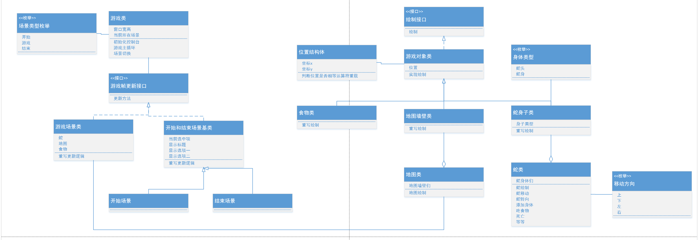

C#
字符串拼接写的写法 Console.WriteLine($"你返回的是{typeof(int)} 字节数为{sizeof(int)}");
using System.Threading;Thread.Sleep(150); 让程序【暂停 150 毫秒】再继续执行
| 代码 | 效果 | 适合场景 |
await Task.Delay(4000) | 异步等待，程序不卡顿、不冻结 | 现代写法、所有项目推荐 |
| 命名空间引入 | using System.Threading.Tasks | |
Thread.Sleep(4000) | 同步阻塞，程序直接卡死不动 | 老旧写法，不推荐 |
| 命名空间引入 | using System.Threading |
C#
Environment.Exit(0)//退出控制台
Console.Clear();//清空控制台里的所有内容
Console.SetCursorPostition(x,y)//设置光标位置
Console.ForegroudColor=ConsoleColor.Red//设置文字颜色
Console.Write("文字内容")
Console.Redkey(ture).keyChar //获取键盘输入的按键
ConsoleKey.W//得到W按键
控制台中，X 方向 占 2 个位置，Y 方向 占 1 个位置
Console.KeyAvailable
//在控制台中检测玩家输入，让程序不会被检测卡住， 会造成性能消耗，降低帧刷新时间
用法
if(Console.KeyAvailable)
{
判断键盘有没有控制台输入，如果有才会为 true，执行 IF 里面的 方法
}
//操作小技巧
按住 F2 改文字，其他位置的文字一起变化
断点 f11 查看代码执行逻辑
鼠标停留函数 f12进入函数内部
sizeof(类型)//可以获取对应整形的字节数 string不能用这个
typeof(int) 可以通过 （typof(?)=typeof(类型)）进行类型判断
int num=int.Parse(Console.ReadKey().KeyChar.Tostring())；
获得控制台输入的字符 如 7 然后转成数字，
不能直接用char转因为会变成ASCII码，直接先转成string
//1.如何打断点 F9
//2.如何一步一步的看代码逻辑 F10
//3.继续执行 停止一步一步的看 F5
//4.可以通过监视窗口查看想要得到的变量值
//2.设置控制台大小
// 窗口大小 缓冲区大小
// 注意：
//1.先设置窗口大小，再设置缓冲区大小
//2.缓冲区的大小不能小于窗口的大小
//3.窗口的大小不能大于控制台的最大尺寸
//窗口大小
Console.SetWindowSize(100, 50);
//缓冲区大小 （可打印内容区域的宽高 ）
Console.SetBufferSize(1000, 1000);
快 TEXT
//1.如何打断点 F9
//2.如何一步一步的看代码逻辑 F10
//3.继续执行 停止一步一步的看 F5
//4.可以通过监视窗口查看想要得到的变量值C#
Console.SetWindowSize(w, h);
Console.SetBufferSize(w,h);
C#
const 仅支持编译期基础值 / 字符串，无内存存储，常量永久固定，不能用于 new 出来的引用对象。TEXT
readonly 可修饰值类型、引用类型字段修饰值类型：字段内存里的数值不能改写；
修饰引用类型：栈 / 实例上存储的堆地址不能更换，但堆内对象内容意修改